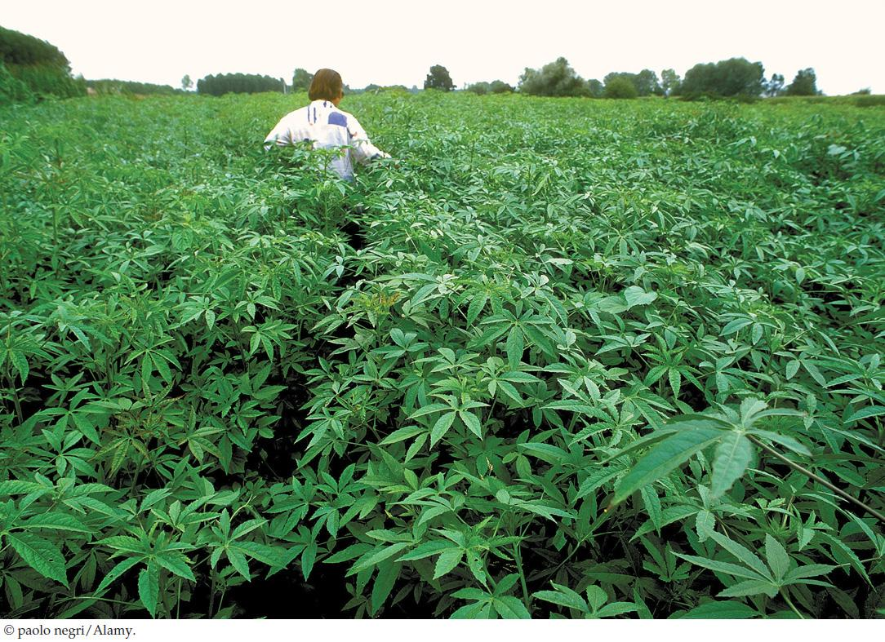

| 24 | The Plant Body |
|

Kenaf is being grown as an alternative source of pulp for paper production.
|
People use plants and substances made from them not only for food but also for fiber, fuel, shelter, and medicines. The clothes you are wearing probably contain cotton, and the paper this book is printed on comes from wood pulp. About 5,000 years ago, Egyptians found that when stems of the papyrus plant (Cyperus papyrus) were peeled and dried, they could be formed into sheets that were easier to write on and store than parchment made from animal skins. About 3,000 years later, the Chinese invented a new method of papermaking that persists today: they mixed fibrous plant materials with water, mashed the mixture into a pulp, and pressed it into sheets, which they then dried.
With the advent of computers, economists predicted a lower demand for paper and therefore for the trees that provide the wood pulp used in papermaking. But this has not happened. Every year, U.S. residents use about 500 kilograms of paper per person, and paper constitutes about one-third of all solid waste. In both Europe and the United States, 90 percent of the forest cover that existed when papermaking was invented has disappeared because of the demand for fiber for paper as well as wood for energy production, heating, and construction. To regenerate these forests and to provide a sustainable resource for papermaking, there is considerable interest in growing fibrous crops that can substitute for trees.
Kenaf (Hibiscus cannabinus) is an angiosperm that grows readily and rapidly in Asia and parts of Africa. Although it does not produce wood, kenaf has stems rich in fiber. It has been cultivated for three millennia in Asia, where its fiber is used to make bags, rope, dry bedding for animals, and even sails. There is now interest in using kenaf fiber for papermaking. Compared with southern pine trees, the current main source of pulp for paper, kenaf grows more rapidly (it matures in months rather than years), produces more fiber per hectare of land, and requires less water and fewer chemicals when used in paper production. Newspapers and greeting cards made from kenaf paper are stronger, yet thinner, than products made from typical wood pulp. The future of this plant as a resource for papermaking looks bright.
What are the properties of the kenaf plant that make it suitable for papermaking?